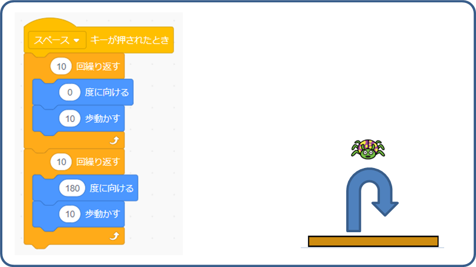
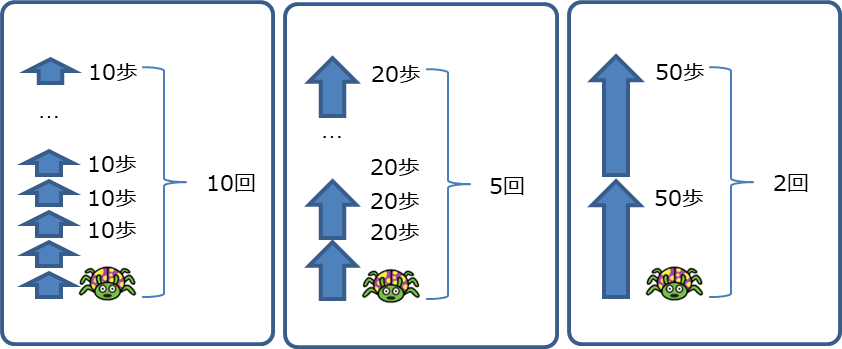
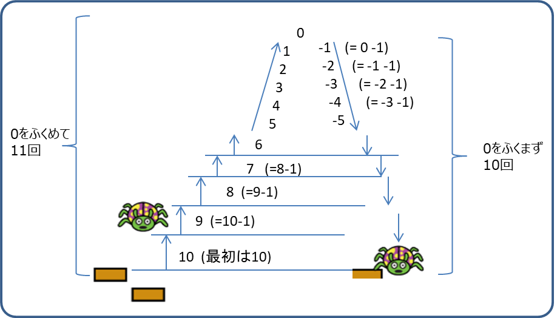
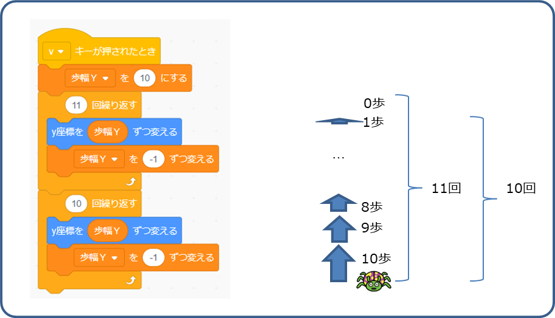
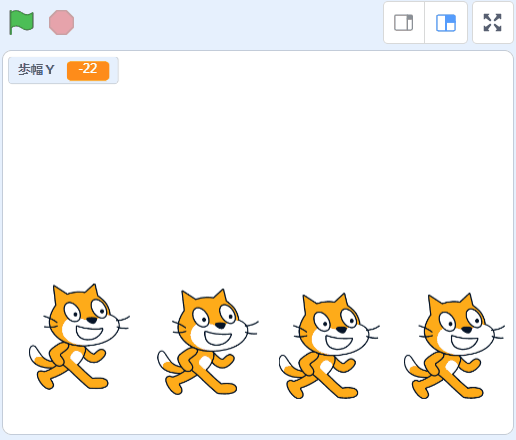

スプライトを動かすプログラムを作ります。
スペースキーが押されたとき、上に10歩ずつ10回移動して、その次、下に10歩ずつ10回移動します。

10回と10歩の数字を、違う数字にするとどうなるかな？
20歩ｘ5回の場合、50歩ｘ1回の場合で比べてみよう。

ぴよーーーん。っとマリオみたいな、重力を感じる、自然なジャンプに挑戦する？
最初は速く(+10歩)、1ずつ減らして、だんだんと遅く(+1歩)して、頂点は(0歩)。
今度は、遅く(-1歩)からだんだんと速く(-10)移動していきます。
プラス(+)とマイナス(-)が逆転するのは、Y座標に対して(+)を加えると上に、(-)を加えると下に、移動するからです。

移動する歩数を返るには、「変数ブロック」を使います。［歩幅Ｙ］という変数を用意しました。
ジャンプするキーが押されたら、［歩幅Ｙ］は10にします。
上に移動するときは-1ずつ0まで11回繰り返します。
下に移動するときは0を含まず10回繰り返します。

